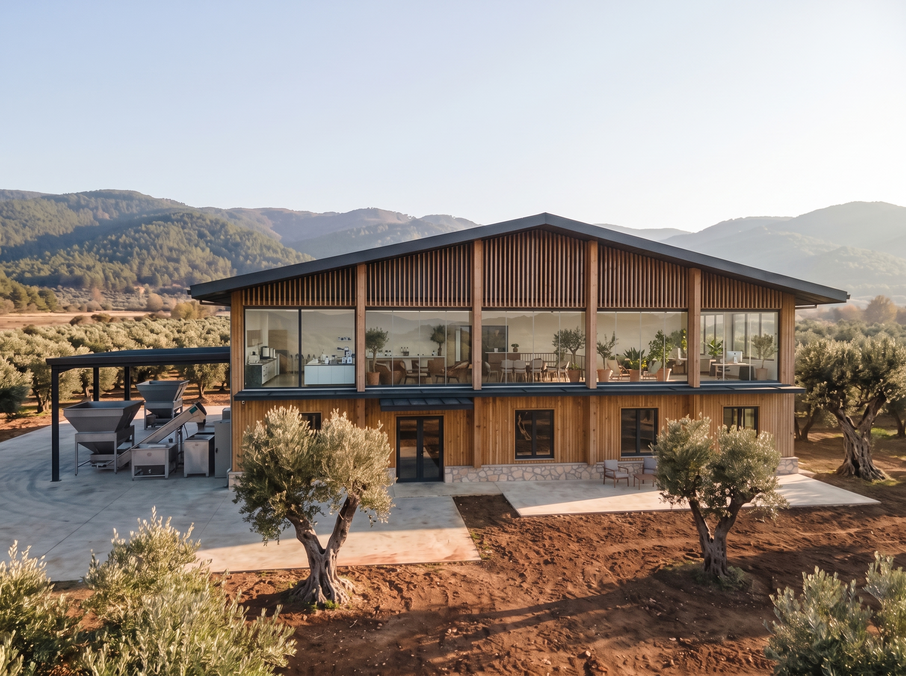

Olive oil you can trace to the grove.
New facility, 500 t/year capacity, operational 2027. We're building supply relationships now.
This season we start with contract pressing and limited early-harvest samples — we came to meet the right partners for 2027 early.
Who we are
Oil from growers we know, traceable to the grove.
Origino is built around an olive oil processing facility in Yenikoy, Orhangazi — in the heart of Turkey's Marmara olive region. We process and supply oil from groves across this single region, working directly with growers we know rather than buying blind through intermediaries.
Location
The Gemlik/Orhangazi region is a recognised terroir, established across the industry.
Capacity & status
- Design capacity
- 500 t / year
- Extraction
- Two-phase system
- Operational
- End of 2027
- Status now
- Under construction
Why Origino
01
Proximity to growing markets
natural logistics advantage to Middle Eastern and Central Asian markets, plus established European routes.
02
Transparency at every step
full lab analysis with every shipment; partners kept informed; we don't overstate what we can deliver.
03
Single-region, known sourcing
all oil from groves within the Orhangazi/Gemlik region; no cross-region blending, no unverified sourcing.
04
Every batch, measured
acidity, peroxide value and polyphenol content reported for each batch, with the full lab report alongside the certificate of origin.